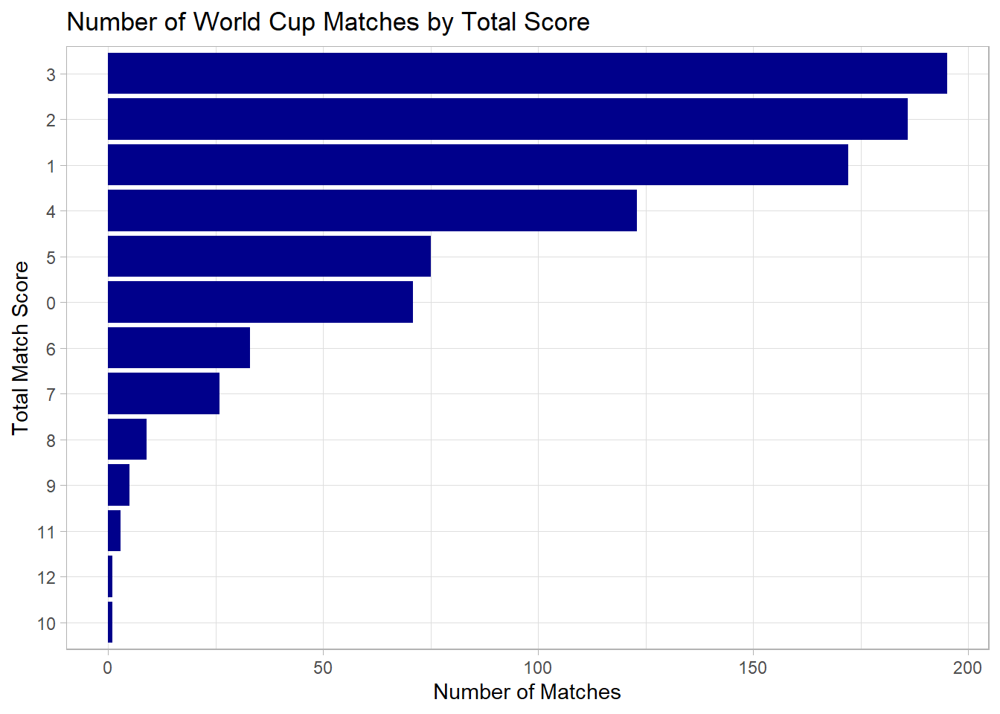
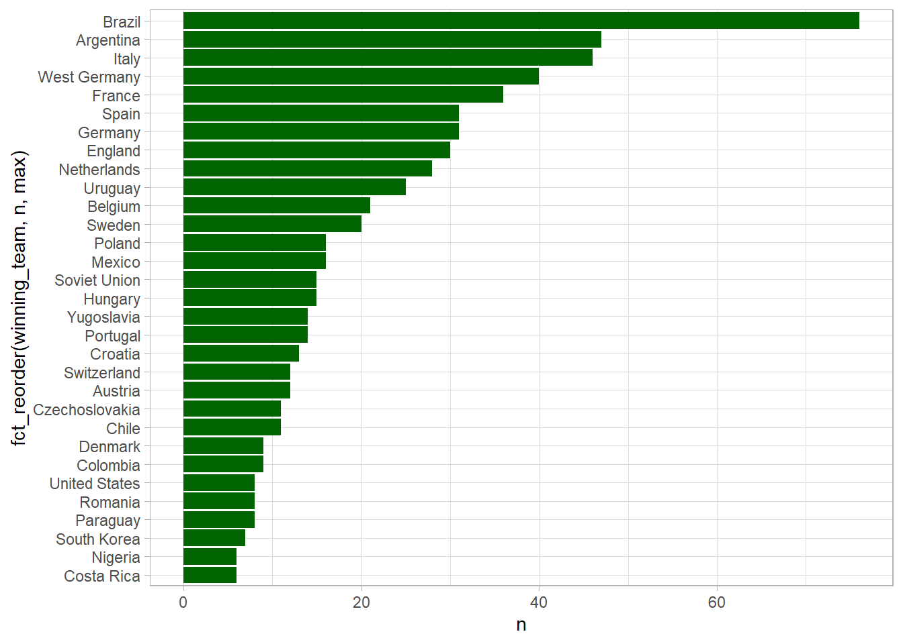
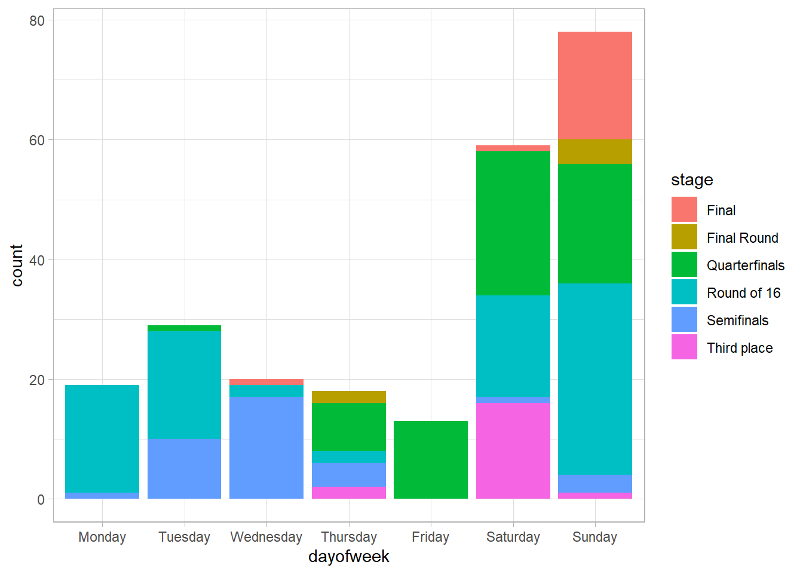
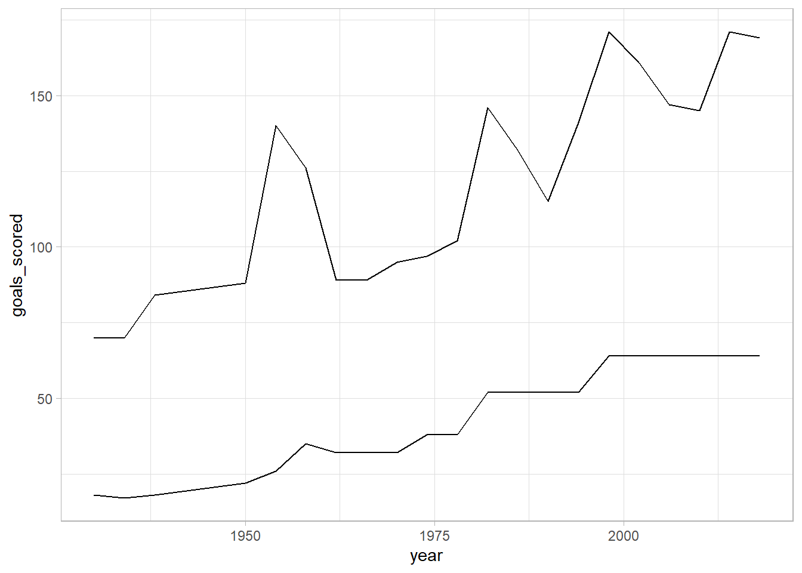

library(tidyverse)
library(tidytuesdayR)
library(tidymodels)
theme_set(theme_light())TidyTuesday
Tidy Tuesday is an awesome initiative by the R for Data Science Community where data sets are published every week for the R community share any analysis and visualizations that can be conjured from the data!
World Cup Data
This data set contains data on every World Cup since 1930.
Load in the World Cup data
tt <- tt_load("2022-11-29")
ttThis episode of Tidy Tuesday contains two data sets. wcmatches (matches from now on) contains 900 rows, one for each game played on the World Cup stage. It has variables for who played who, what stage (or round) of the tournament the game was played, who won, and the goals scored by each team.
matches <- tt$wcmatches
glimpse(matches)Rows: 900
Columns: 15
$ year <dbl> 1930, 1930, 1930, 1930, 1930, 1930, 1930, 1930, 1930, 1…
$ country <chr> "Uruguay", "Uruguay", "Uruguay", "Uruguay", "Uruguay", …
$ city <chr> "Montevideo", "Montevideo", "Montevideo", "Montevideo",…
$ stage <chr> "Group 1", "Group 4", "Group 2", "Group 3", "Group 1", …
$ home_team <chr> "France", "Belgium", "Brazil", "Peru", "Argentina", "Ch…
$ away_team <chr> "Mexico", "United States", "Yugoslavia", "Romania", "Fr…
$ home_score <dbl> 4, 0, 1, 1, 1, 3, 0, 0, 1, 6, 1, 0, 0, 4, 3, 6, 6, 4, 2…
$ away_score <dbl> 1, 3, 2, 3, 0, 0, 4, 3, 0, 3, 0, 1, 4, 0, 1, 1, 1, 2, 3…
$ outcome <chr> "H", "A", "A", "A", "H", "H", "A", "A", "H", "H", "H", …
$ win_conditions <chr> NA, NA, NA, NA, NA, NA, NA, NA, NA, NA, NA, NA, NA, NA,…
$ winning_team <chr> "France", "United States", "Yugoslavia", "Romania", "Ar…
$ losing_team <chr> "Mexico", "Belgium", "Brazil", "Peru", "France", "Mexic…
$ date <date> 1930-07-13, 1930-07-13, 1930-07-14, 1930-07-14, 1930-0…
$ month <chr> "Jul", "Jul", "Jul", "Jul", "Jul", "Jul", "Jul", "Jul",…
$ dayofweek <chr> "Sunday", "Sunday", "Monday", "Monday", "Tuesday", "Wed…worldcups (wcups from now on) has information about each world cup on a high level. It contains information like the name of the host country each World Cup, the names of the top four finishers, total tournament goals scored, and the number of teams, games, and attendants.
wcups <- tt$worldcups
glimpse(wcups)Rows: 21
Columns: 10
$ year <dbl> 1930, 1934, 1938, 1950, 1954, 1958, 1962, 1966, 1970, 197…
$ host <chr> "Uruguay", "Italy", "France", "Brazil", "Switzerland", "S…
$ winner <chr> "Uruguay", "Italy", "Italy", "Uruguay", "West Germany", "…
$ second <chr> "Argentina", "Czechoslovakia", "Hungary", "Brazil", "Hung…
$ third <chr> "USA", "Germany", "Brazil", "Sweden", "Austria", "France"…
$ fourth <chr> "Yugoslavia", "Austria", "Sweden", "Spain", "Uruguay", "W…
$ goals_scored <dbl> 70, 70, 84, 88, 140, 126, 89, 89, 95, 97, 102, 146, 132, …
$ teams <dbl> 13, 16, 15, 13, 16, 16, 16, 16, 16, 16, 16, 24, 24, 24, 2…
$ games <dbl> 18, 17, 18, 22, 26, 35, 32, 32, 32, 38, 38, 52, 52, 52, 5…
$ attendance <dbl> 434000, 395000, 483000, 1337000, 943000, 868000, 776000, …Explore the Data
Let’s first look the most common match scores for all the games. It looks like low scoring games are the most common.
matches %>%
count(home_score, away_score, sort = TRUE)# A tibble: 49 × 3
home_score away_score n
<dbl> <dbl> <int>
1 1 0 94
2 2 1 90
3 1 1 87
4 0 1 78
5 0 0 71
6 2 0 59
7 1 2 51
8 0 2 40
9 3 1 36
10 2 2 34
# … with 39 more rowsI want to visualize how many games there were for total goals scored between the home and away teams. We can do this by creating a new column (total_score) adding the two scores together and counting the number of games with that score.
We can use ggplot2 to easily visualize our data. Also, by turning total_score into a factor, I can reorder the levels of the factors to reflect the number of matches each for each score. This makes the plot easily comprehensible.
library(viridis)
matches %>%
mutate(total_score = home_score + away_score) %>%
count(total_score, sort = TRUE) %>%
mutate(total_score = factor(total_score)) %>%
mutate(total_score = fct_reorder(total_score, n)) %>%
ggplot() +
geom_col(aes(total_score, n), fill = "dark blue") +
xlab("Total Match Score") +
ylab("Number of Matches") +
ggtitle("Number of World Cup Matches by Total Score") +
theme(legend.position = "none") +
coord_flip()
It looks like total score of 1, 2, and 3 are by far the most common score outcomes for world cup matches. Let’s now look at the number of matches each country has one since 1930. We are going to visualize teams that have one more than 5 games at world cup and see who ranks on top.
matches |>
filter(outcome != "D") |>
count(winning_team, sort = TRUE)|>
filter(n > 5) |>
ggplot() +
geom_col(aes(fct_reorder(winning_team, n, max), n), fill = "dark green") +
coord_flip()
Brazil is by far the most winningest team in World Cup history! But I which country has won the most games in the past 20 years?
matches |>
filter(outcome != "D", year >= 2000) |>
count(winning_team, sort = TRUE)|>
filter(n > 5) |>
ggplot() +
geom_col(aes(fct_reorder(winning_team, n, max), n), fill = "dark red") +
coord_flip()
Germany has overcome Brazil!
Just for fun, let’s see which day of the week most World Cup matches are played. Hopefully this information can help you figure out how to spend your vacation days if you want to see the most action.
We are going to also stratify by which stage the games are being played, so if you are more interested in the games deeper in the bracket, we can see on what days those are played most often.
Here I am removing the number associoted with each Group to get an overall Group category. Next, I am releveling the days of week variable to make them look a little nicer.
matches <- matches %>%
mutate(stage = if_else(str_detect(stage, "^Group"), "Group",stage)) %>%
mutate(stage = if_else(str_detect(stage, "^ Group"), "Group",stage)) %>%
mutate(dayofweek = factor(dayofweek, c("Monday", "Tuesday", "Wednesday",
"Thursday", "Friday", "Saturday",
"Sunday")))The plot shows that most of the games are played on Saturday and Sunday. So no need to take a vacation day! But Tuesday and Wednesday seem to have the most Semifinal matches.
matches %>%
filter(stage != "Group")|>
ggplot(aes(dayofweek, fill = stage)) +
geom_bar()
World Cup dataset
As was mentioned above, the World Cup dataset contains more general information about each World Cup.
wcups# A tibble: 21 × 10
year host winner second third fourth goals…¹ teams games atten…²
<dbl> <chr> <chr> <chr> <chr> <chr> <dbl> <dbl> <dbl> <dbl>
1 1930 Uruguay Uruguay Argen… USA Yugos… 70 13 18 434000
2 1934 Italy Italy Czech… Germ… Austr… 70 16 17 395000
3 1938 France Italy Hunga… Braz… Sweden 84 15 18 483000
4 1950 Brazil Uruguay Brazil Swed… Spain 88 13 22 1337000
5 1954 Switzerland West Germa… Hunga… Aust… Urugu… 140 16 26 943000
6 1958 Sweden Brazil Sweden Fran… West … 126 16 35 868000
7 1962 Chile Brazil Czech… Chile Yugos… 89 16 32 776000
8 1966 England England West … Port… Sovie… 89 16 32 1614677
9 1970 Mexico Brazil Italy West… Urugu… 95 16 32 1673975
10 1974 Germany West Germa… Nethe… Pola… Brazil 97 16 38 1774022
# … with 11 more rows, and abbreviated variable names ¹goals_scored,
# ²attendanceWe can count the number of total goals scored in a World Cup and rank them by which tournament had the most goals scored.
wcups %>%
count(year, wt = goals_scored, sort = TRUE)# A tibble: 21 × 2
year n
<dbl> <dbl>
1 1998 171
2 2014 171
3 2018 169
4 2002 161
5 2006 147
6 1982 146
7 2010 145
8 1994 141
9 1954 140
10 1986 132
# … with 11 more rowsLet’s also visualize the relationship between number of goals scored and the number of matches played in each World Cup.
wcups %>%
ggplot(aes(year, goals_scored)) +
geom_line() +
geom_line(aes(year, games))